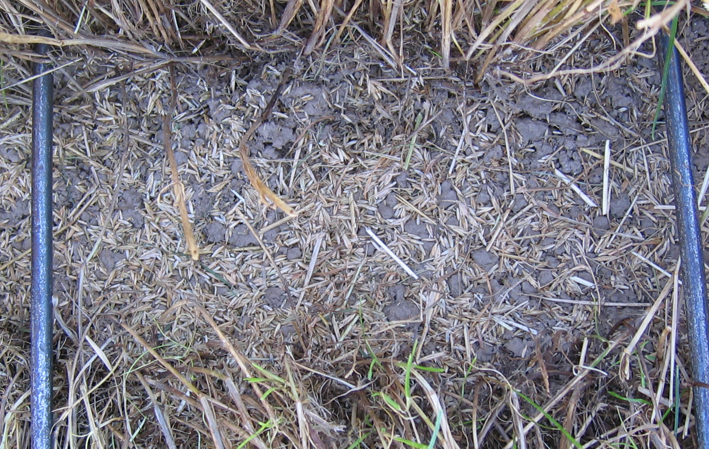
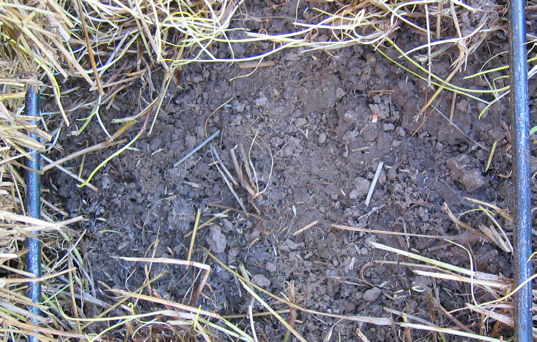
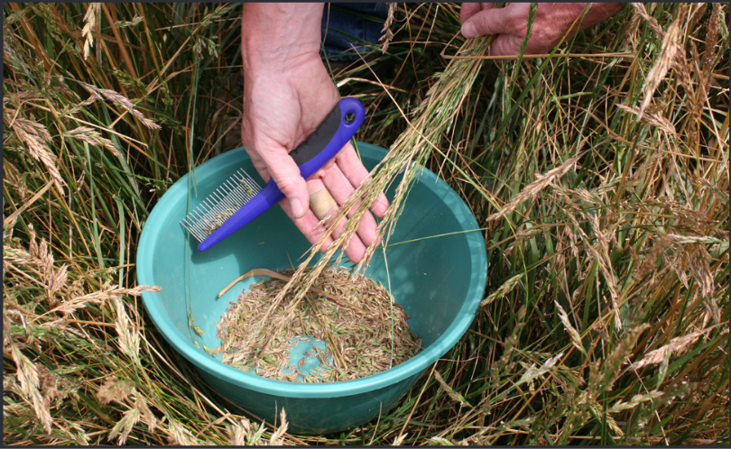
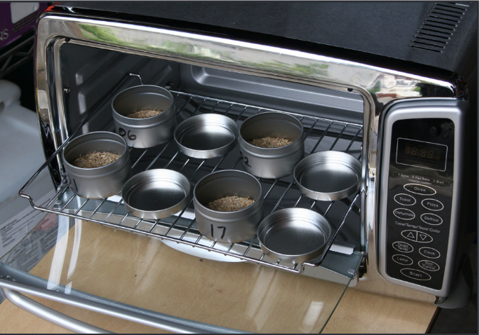
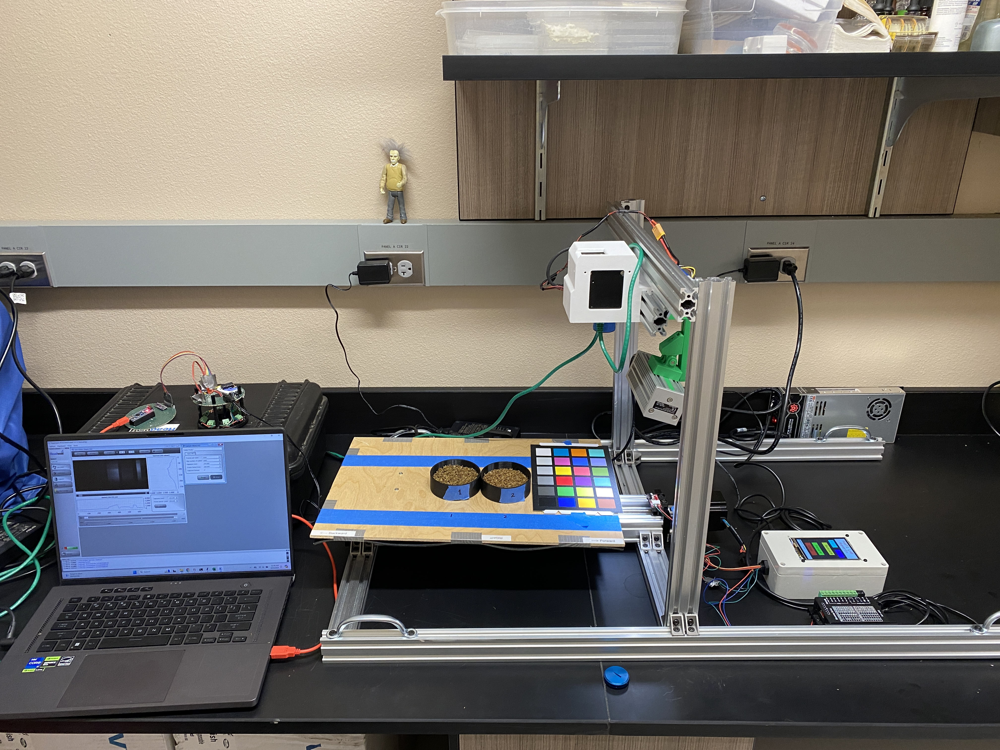
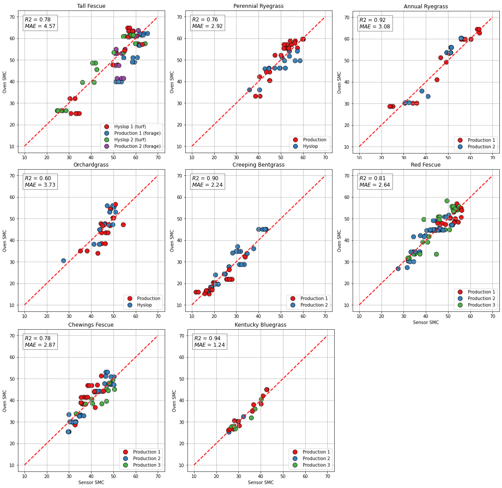

In grass seed production, seed moisture content (SMC) is a critical indicator of harvest timing. Harvesting at high SMC leads to poor germination and storage spoilage, while harvesting at low SMC results in severe seed shattering that reduces production.


The traditional method for determining SMC involves obtaining representative seed head samples from the field, stripping seed from the heads, weighing the seed before and after drying, and calculating SMC as a percentage. This process is time consuming, requires travel to a central location for sample processing, and sometimes occurs after the SMC has already fallen below recommended levels for swathing, or after long periods of transport which may influence accurate SMC estimation.
There is a pressing need for a more efficient method for determining SMC in grass seed crops so that timely harvest decisions can be made, especially when multiple fields need to be tested in a single day.


The project first aimed to identify the most sensitive spectral wavelengths to moisture in seeds. Using hyperspectral instruments, the team characterized the near-infrared (NIR) spectral response of seeds at varying moisture levels. The working principle leverages the fact that water molecules absorb light at specific NIR wavelengths; by measuring the amount of light absorbed, we can infer moisture content in the seed.

The team designed and developed the Grady Sensor, including the main device body, a seed cup, and calibration standards. The sensor delivers SMC readings in seconds, eliminating the need for sample transport and lab processing.
The Grady Sensor is calibrated for eight grass seed species: tall fescue (Schedonorus arundinaceus (Shreb.) Dumort.), annual ryegrass (Lolium perenne L. ssp. multiflorum (Lam.) Husnot), perennial ryegrass (Lolium perenne L.), orchardgrass (Dactylis glomerata L.), creeping red fescue (Festuca rubra L. subsp. rubra), creeping bentgrass (Agrostis stolonifera L.), Chewings fescue (Festuca rubra L. subsp. fallax (Thuill.) Nyman), and Kentucky bluegrass (Poa pratensis L.). The Grady Sensor achieves a mean error of 1.2–4.6% across these eight species, and is proven to be a convenient and cost-effective means of SMC assessment in many economically important cool-season grass crop species.

The Grady Sensor is now commercially available through Digital Seed Technology Inc.
Visit Digi Seed Tech ↗